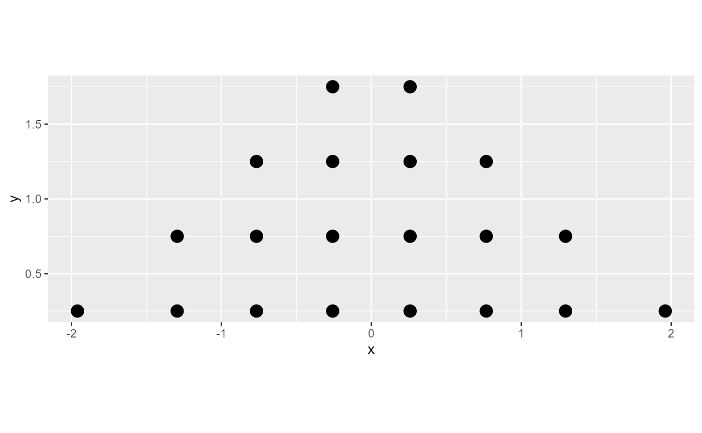

Bins the provided data values using one of several dotplot algorithms.
numeric vector of x values
numeric vector of y values
bin width
ratio of bin width to dot height
ratio of dot height to vertical distance between dot centers
The layout method used for the dots:
"bin" (default): places dots on the off-axis at the midpoint of their bins as in the classic Wilkinson dotplot.
This maintains the alignment of rows and columns in the dotplot. This layout is slightly different from the
classic Wilkinson algorithm in that: (1) it nudges bins slightly to avoid overlapping bins and (2) if
the input data are symmetrical it will return a symmetrical layout.
"weave": uses the same basic binning approach of "bin", but places dots in the off-axis at their actual
positions (modulo overlaps, which are nudged out of the way). This maintains the alignment of rows but does not
align dots within columns. Does not work well when side = "both".
"swarm": uses the "compactswarm" layout from beeswarm::beeswarm(). Does not maintain alignment of rows or
columns, but can be more compact and neat looking, especially for sample data (as opposed to quantile
dotplots of theoretical distributions, which may look better with "bin" or "weave").
Which side to place the slab on. "topright", "top", and "right" are synonyms
which cause the slab to be drawn on the top or the right depending on if orientation is "horizontal"
or "vertical". "bottomleft", "bottom", and "left" are synonyms which cause the slab
to be drawn on the bottom or the left depending on if orientation is "horizontal" or
"vertical". "topleft" causes the slab to be drawn on the top or the left, and "bottomright"
causes the slab to be drawn on the bottom or the right. "both" draws the slab mirrored on both
sides (as in a violin plot).
Whether the dots are laid out horizontally or vertically.
Follows the naming scheme of geom_slabinterval():
"horizontal" assumes the data values for the dotplot are in the x
variable and that dots will be stacked up in the y direction.
"vertical" assumes the data values for the dotplot are in the y
variable and that dots will be stacked up in the x direction.
For compatibility with the base ggplot naming scheme for orientation,
"x" can be used as an alias for "vertical" and "y" as an alias for
"horizontal".
A data.frame with three columns:
x: the x position of each dot
y: the y position of each dot
bin: a unique number associated with each bin
(supplied but not used when layout = "swarm")
find_dotplot_binwidth() for an algorithm that finds good bin widths
to use with this function; geom_dotsinterval() for geometries that use
these algorithms to create dotplots.
library(dplyr)
#>
#> Attaching package: 'dplyr'
#> The following objects are masked from 'package:stats':
#>
#> filter, lag
#> The following objects are masked from 'package:base':
#>
#> intersect, setdiff, setequal, union
library(ggplot2)
x = qnorm(ppoints(20))
bin_df = bin_dots(x = x, y = 0, binwidth = 0.5, heightratio = 1)
bin_df
#> # A tibble: 20 x 3
#> x y bin
#> <dbl> <dbl> <dbl>
#> 1 -1.96 0.25 1
#> 2 -1.29 0.25 2
#> 3 -1.29 0.75 2
#> 4 -0.766 0.25 3
#> 5 -0.766 0.75 3
#> 6 -0.766 1.25 3
#> 7 -0.258 0.25 4
#> 8 -0.258 0.75 4
#> 9 -0.258 1.25 4
#> 10 -0.258 1.75 4
#> 11 0.258 0.25 5
#> 12 0.258 0.75 5
#> 13 0.258 1.25 5
#> 14 0.258 1.75 5
#> 15 0.766 0.25 6
#> 16 0.766 0.75 6
#> 17 0.766 1.25 6
#> 18 1.29 0.25 7
#> 19 1.29 0.75 7
#> 20 1.96 0.25 8
# we can manually plot the binning above, though this is only recommended
# if you are using find_dotplot_binwidth() and bin_dots() to build your own
# grob. For practical use it is much easier to use geom_dots(), which will
# automatically select good bin widths for you (and which uses
# find_dotplot_binwidth() and bin_dots() internally)
bin_df %>%
ggplot(aes(x = x, y = y)) +
geom_point(size = 4) +
coord_fixed()
